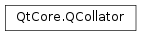

QCollator¶
Note
This class was introduced in Qt 5.2.
Synopsis¶
Functions¶
- def
caseSensitivity() - def
compare(s1, len1, s2, len2) - def
compare(s1, s2) - def
compare(s1, s2) - def
ignorePunctuation() - def
locale() - def
numericMode() - def
operator()(s1, s2) - def
setCaseSensitivity(cs) - def
setIgnorePunctuation(on) - def
setLocale(locale) - def
setNumericMode(on) - def
sortKey(string) - def
swap(other)
Detailed Description¶
The
PySide2.QtCore.QCollatorclass compares strings according to a localized collation algorithm.
PySide2.QtCore.QCollatoris initialized with aPySide2.QtCore.QLocaleand an optional collation strategy. It tries to initialize the collator with the specified values. The collator can then be used to compare and sort strings in a locale dependent fashion.A
PySide2.QtCore.QCollatorobject can be used together with template based sorting algorithms such as std::sort to sort a list of QStrings.In addition to the locale and collation strategy, several optional flags can be set that influence the result of the collation.
-
class
PySide2.QtCore.QCollator(arg__1)¶ -
class
PySide2.QtCore.QCollator([locale=QLocale()]) Parameters: - locale –
PySide2.QtCore.QLocale - arg__1 –
PySide2.QtCore.QCollator
Creates a copy of
other.Constructs a
PySide2.QtCore.QCollatorfromlocale. Iflocaleis not specified the system’s default locale is used.See also
- locale –
-
PySide2.QtCore.QCollator.caseSensitivity()¶ Return type: PySide2.QtCore.Qt.CaseSensitivityReturns case sensitivity of the collator.
-
PySide2.QtCore.QCollator.compare(s1, s2)¶ Parameters: - s1 –
PySide2.QtCore.QStringRef - s2 –
PySide2.QtCore.QStringRef
Return type: PySide2.QtCore.intThis is an overloaded function.
Compares
s1withs2. Returns an integer less than, equal to, or greater than zero depending on whethers1is smaller, equal or larger thans2.- s1 –
-
PySide2.QtCore.QCollator.compare(s1, len1, s2, len2) Parameters: - s1 –
PySide2.QtCore.QChar - len1 –
PySide2.QtCore.int - s2 –
PySide2.QtCore.QChar - len2 –
PySide2.QtCore.int
Return type: PySide2.QtCore.intThis is an overloaded function.
Compares
s1withs2.len1andlen2specify the length of thePySide2.QtCore.QChararrays pointer to bys1ands2.Returns an integer less than, equal to, or greater than zero depending on whether
s1is smaller, equal or larger thans2.- s1 –
-
PySide2.QtCore.QCollator.compare(s1, s2) Parameters: - s1 – unicode
- s2 – unicode
Return type: PySide2.QtCore.intCompares
s1withs2. Returns an integer less than, equal to, or greater than zero depending on whethers1is smaller, equal or larger thans2.
-
PySide2.QtCore.QCollator.ignorePunctuation()¶ Return type: PySide2.QtCore.boolReturns
trueif punctuation characters and symbols are ignored when determining sort order.
-
PySide2.QtCore.QCollator.locale()¶ Return type: PySide2.QtCore.QLocaleReturns the locale of the collator.
See also
-
PySide2.QtCore.QCollator.numericMode()¶ Return type: PySide2.QtCore.boolReturns
trueif numeric sorting is enabled, false otherwise.
-
PySide2.QtCore.QCollator.operator()(s1, s2)¶ Parameters: - s1 – unicode
- s2 – unicode
Return type: PySide2.QtCore.bool
-
PySide2.QtCore.QCollator.setCaseSensitivity(cs)¶ Parameters: cs – PySide2.QtCore.Qt.CaseSensitivitySets the case
sensitivityof the collator.
-
PySide2.QtCore.QCollator.setIgnorePunctuation(on)¶ Parameters: on – PySide2.QtCore.boolIf
onis set to true, punctuation characters and symbols are ignored when determining sort order.The default is locale dependent.
Note
This method is not currently supported if Qt is configured to not use ICU on Linux.
-
PySide2.QtCore.QCollator.setLocale(locale)¶ Parameters: locale – PySide2.QtCore.QLocaleSets the locale of the collator to
locale.See also
-
PySide2.QtCore.QCollator.setNumericMode(on)¶ Parameters: on – PySide2.QtCore.boolEnables numeric sorting mode when
onis set to true.This will enable proper sorting of numeric digits, so that e.g. 100 sorts after 99.
By default this mode is off.
Note
On Windows, this functionality makes use of the ICU library. If Qt was compiled without ICU support, it falls back to code using native Windows API, which only works from Windows 7 onwards. On older versions of Windows, it will not work and a warning will be emitted at runtime.
-
PySide2.QtCore.QCollator.sortKey(string)¶ Parameters: string – unicode Return type: PySide2.QtCore.QCollatorSortKeyReturns a for
string.Creating the sort key is usually somewhat slower, than using the
PySide2.QtCore.QCollator.compare()methods directly. But if the string is compared repeatedly (e.g. when sorting a whole list of strings), it’s usually faster to create the sort keys for each string and then sort using the keys.
-
PySide2.QtCore.QCollator.swap(other)¶ Parameters: other – PySide2.QtCore.QCollatorSwaps this collator with
other. This function is very fast and never fails.
© 2018 The Qt Company Ltd. Documentation contributions included herein are the copyrights of their respective owners. The documentation provided herein is licensed under the terms of the GNU Free Documentation License version 1.3 as published by the Free Software Foundation. Qt and respective logos are trademarks of The Qt Company Ltd. in Finland and/or other countries worldwide. All other trademarks are property of their respective owners.